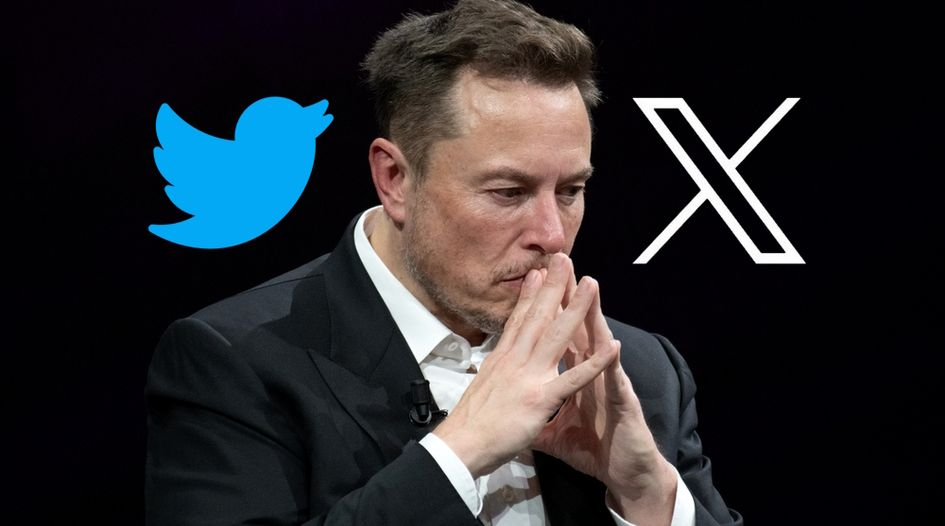
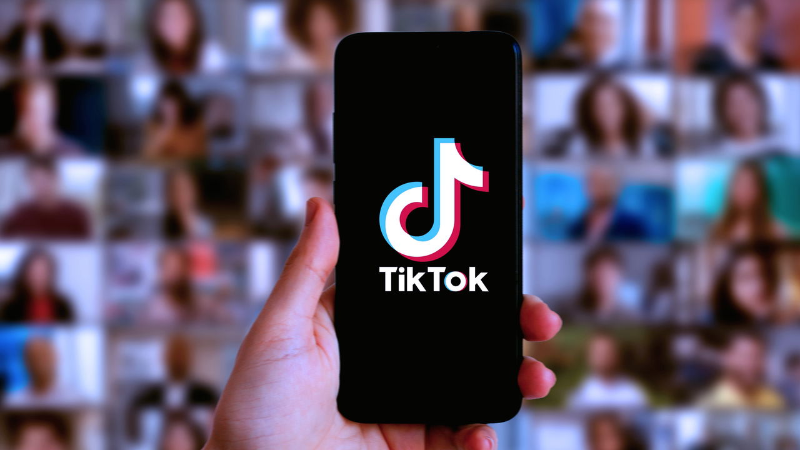
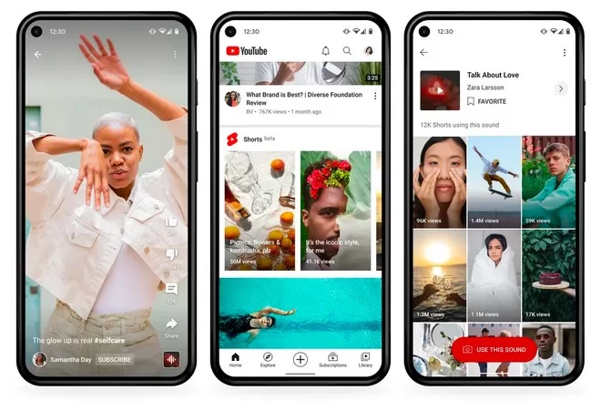

📋 Resumo
Se 2020 havia consolidado a internet como infraestrutura essencial, os anos seguintes redefinem o próprio conceito de tecnologia digital. O que começa a se formar é um novo paradigma: uma internet em que a inteligência artificial não é um recurso, mas o próprio motor da vida cotidiana, e em que as plataformas sociais tradicionais enfrentam sua maior crise existencial desde sua criação.
📚 Detalhes
O principal marco de 2022 é, indisccutivelmente, o avanço da IA generativa. Embora sistemas de machine learning existissem há anos, nada se comparava à revolução iniciada com o lançamento de modelos como GPT-3.5 e GPT-4, pela OpenAI, e a popularização de ferramentas como ChatGPT, inaugurado oficialmente em novembro de 2022. Em poucas semanas, o ChatGPT se tornou a plataforma de crescimento mais rápido da história da internet, impactando tanto a cultura popular quanto universidades, escolas, empresas, governos e mercados criativos. Pela primeira vez, um sistema de IA conseguia conversar fluentemente, escrever textos complexos, produzir código funcional, explicar conceitos, resolver problemas e auxiliar em tarefas criativas e acadêmicas.
O impacto foi imediato: educadores discutiram como evitar ou integrar a IA na educação; empresas passaram a incorporar modelos de linguagem em seus sistemas internos; profissões criativas começaram a repensar sua função diante de máquinas que produzem textos, artigos, scripts, análises e até obras literárias. Paralelamente, a IA generativa não se limitou ao texto. 2022 e 2023 viram a explosão dos sistemas de imagem e vídeo por IA, como DALL·E 2, Midjourney, Stable Diffusion e, mais tarde, modelos capazes de gerar vídeos realistas e animações complexas. O que antes exigia estúdios inteiros passou a ser possível por meio de prompts. Esse avanço abriu debates éticos profundos sobre direitos autorais, autoria, originalidade e o futuro do trabalho criativo. Artistas protestaram contra o treinamento de IA em seus acervos, e tribunais do mundo inteiro passaram a discutir se obras produzidas por máquinas poderiam ser protegidas por copyright.

Enquanto a IA avançava rapidamente, as redes sociais tradicionais enfrentavam sua maior crise estrutural. O Facebook, que havia dominado o mundo por mais de uma década, passa a perder usuários mais jovens e enfrenta desgaste público, escândalos de privacidade e queda de relevância cultural. O anúncio da Meta e o foco de Mark Zuckerberg no metaverso — apresentado em 2021 e desenvolvido intensamente em 2022 e 2023 — não gera a adesão esperada. A realidade virtual ainda não está madura, e o metaverso permanece mais promessa do que realidade tangível.
Enquanto isso, o Twitter enfrenta seu momento mais turbulento. Em outubro de 2022, Elon Musk compra a plataforma e inicia mudanças radicais: demissões em massa, cortes na equipe de moderação, liberação de contas banidas, mudanças no algoritmo e a polêmica venda do selo de verificação. O ambiente se torna instável, moderadores são substituídos por “sistemas de automação” e a plataforma mergulha em desinformação, discurso de ódio e queda de credibilidade. Em 2023, Musk rebatiza o Twitter como X, tentando transformá-lo em um “aplicativo para tudo”, mas o resultado é uma mistura de caos, perda de anunciantes e migração de usuários. A instabilidade do Twitter abre espaço para concorrentes como Mastodon, Bluesky e Threads (lançado pela Meta em 2023). Pela primeira vez em uma década, o domínio das redes sociais clássicas é questionado.

Enquanto isso, o TikTok consolida seu domínio absoluto sobre a cultura digital. A estética do vídeo curto, iniciada em 2018, torna-se a linguagem universal da internet em 2022 e 2023. O algoritmo do TikTok, baseado em segmentação comportamental profunda, influencia moda, humor, política, música, culinária e até notícias. Artistas alcançam fama global por meio de trechos de 10 a 30 segundos, redefinindo a indústria musical. Governos começam a temer o poder da plataforma: Estados Unidos, Canadá e União Europeia discutem restrições, proibições e leis específicas devido à preocupação com a coleta de dados e possível influência geopolítica da China.

Outro fenômeno crucial dos anos pós-2022 é a intensificação da guerra cibernética. A invasão da Ucrânia pela Rússia, em fevereiro de 2022, marca o início de um conflito híbrido que combina guerra física e guerra digital. Hackers, bots, campanhas de desinformação e ataques a infraestruturas críticas fazem parte da estratégia moderna. Plataformas como Telegram, Twitter, TikTok e YouTube tornam-se campos de batalha para narrativas geopolíticas. A internet revela seu papel como arma e como vulnerabilidade: redes elétricas, bancos, hospitais e governos enfrentam ataques de ransomware e espionagem digital. O ciberespaço torna-se um novo teatro de guerra.

A partir de 2022, a economia dos criadores — creators, streamers, influencers — se consolida como um dos pilares da internet. Plataformas como YouTube, Twitch, TikTok, Instagram e OnlyFans impulsionam carreiras multimilionárias. Milhares de pessoas transformam produção de conteúdo em profissão de tempo integral. O YouTube Shorts tenta competir com TikTok; Instagram Reels ganha prioridade no algoritmo; o Spotify investe em podcasts e vídeos; Amazon e TikTok se movem em direção ao comércio digital, misturando entretenimento e varejo. O trabalho digital deixa de ser exceção e se torna alternativa real de renda, especialmente para jovens — mas também sofre com precarização, burnout e instabilidade algorítmica.

Governos começam a reagir ao poder das big techs. A União Europeia implementa leis rigorosas, como a Digital Services Act (DSA) e a Digital Markets Act (DMA), que tentam regular algoritmos, publicidade direcionada, discurso de ódio e abuso de dados. Nos Estados Unidos, cresce o debate sobre monopólios digitais e a necessidade de regulamentar IA e redes sociais. A discussão ética sobre IA também explode. Países criam grupos de trabalho para discutir responsabilidades, viés algorítmico, fake news geradas por IA e impactos sobre o trabalho humano.
A partir de 2022, a humanidade entra em uma cultura digital mais intensa e fragmentada: A inteligência artificial — especialmente modelos de linguagem — torna-se companheira de estudo, trabalho, pesquisa, criação artística e até de relacionamentos. É o começo de uma nova era da humanidade: a era da convivência cotidiana entre humanos e máquinas inteligentes.
Coded Bias
Mídia: https://www.netflix.com/title/81328723
.🔗 Fontes de Pesquisa